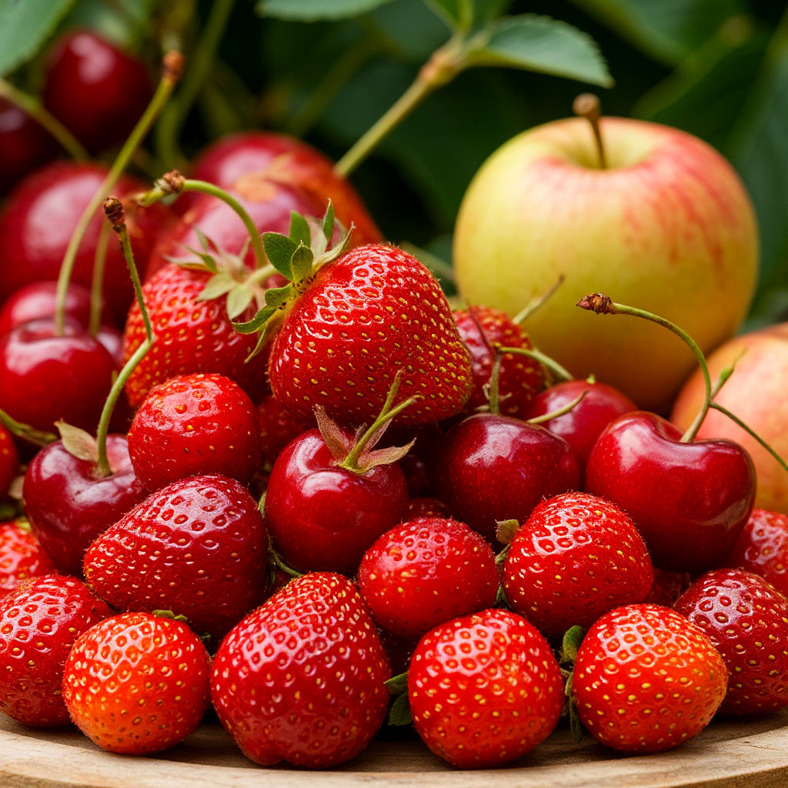
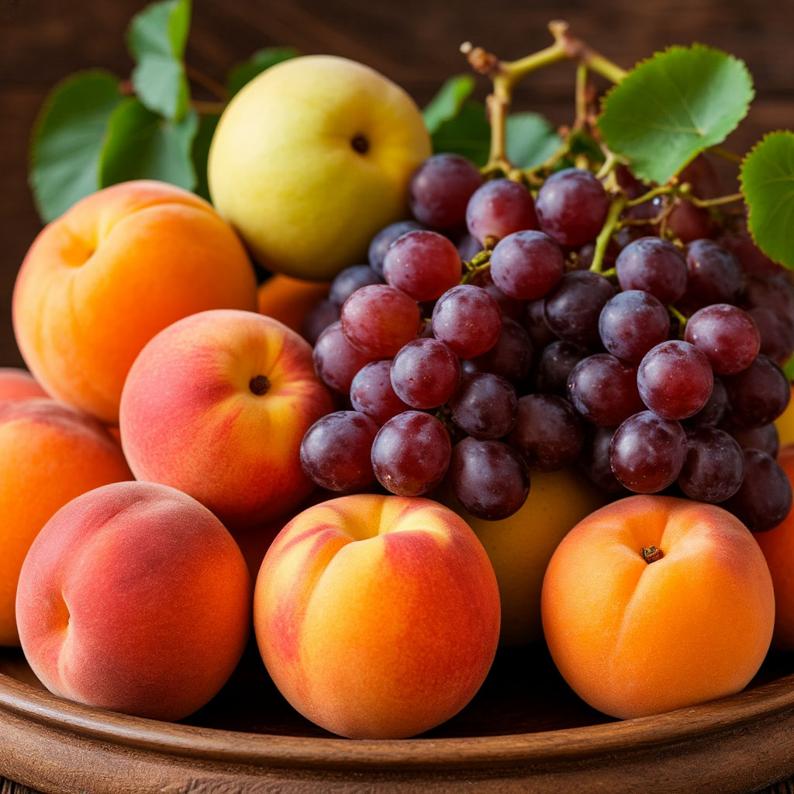
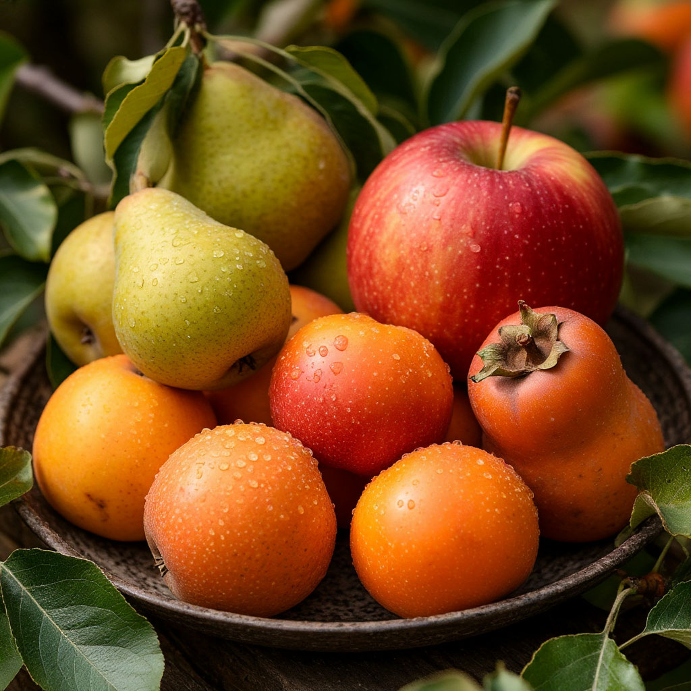
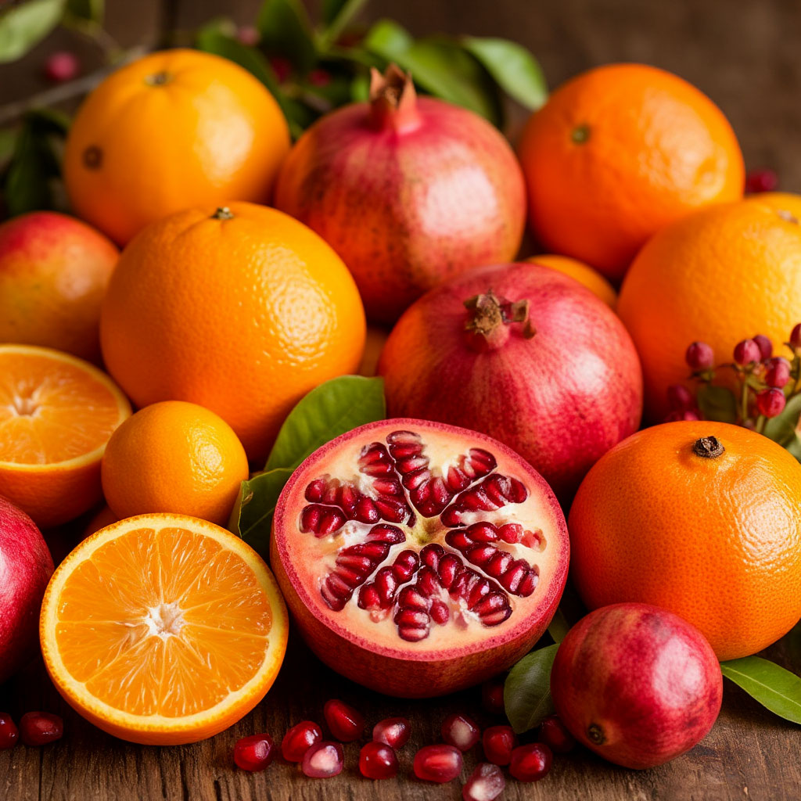

Весна: клубника, черешня, ранние яблоки

Нежные, сладковатые плоды с высоким содержанием витамина C. Помогают укрепить иммунитет после зимы.
Лето: персики, абрикосы, виноград, дыни

Сочные, насыщенные витаминами A и E. Отлично утоляют жажду и придают энергию в жаркий сезон.
Осень: груши, поздние сорта яблок, хурма

Богаты клетчаткой и антиоксидантами. Способствуют здоровью кишечника и замедляют старение клеток.
Зима: цитрусовые, гранаты

Отличаются долгим сроком хранения и повышенным содержанием полезных веществ. Идеальны для защиты от простуд.
Как выбирать сезонные фрукты?
- Ориентируйтесь на местный календарь созревания.
- Обращайте внимание на аромат — спелый фрукт пахнет ярко.
- Покупайте на рынках у фермеров.
- Избегайте плодов с повреждённой кожурой.